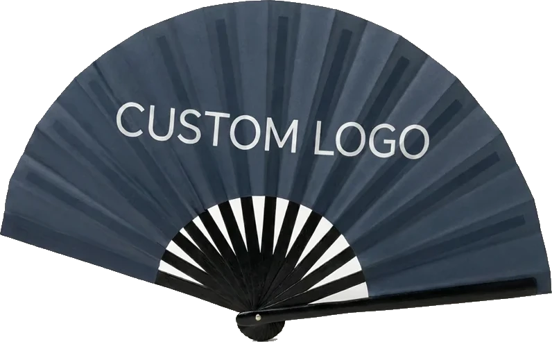

ClackDetails
Fan format
33cm Clack Fan
Bamboo frame + polyester fabric
Existing website artwork example; the image does not establish available stock, final colour or production approval.
Artwork & specification notes
Ask about artwork, the relevant specification, samples or supply conditions. Published dimensions and materials are the current website’s descriptions; they need confirmation for your order.